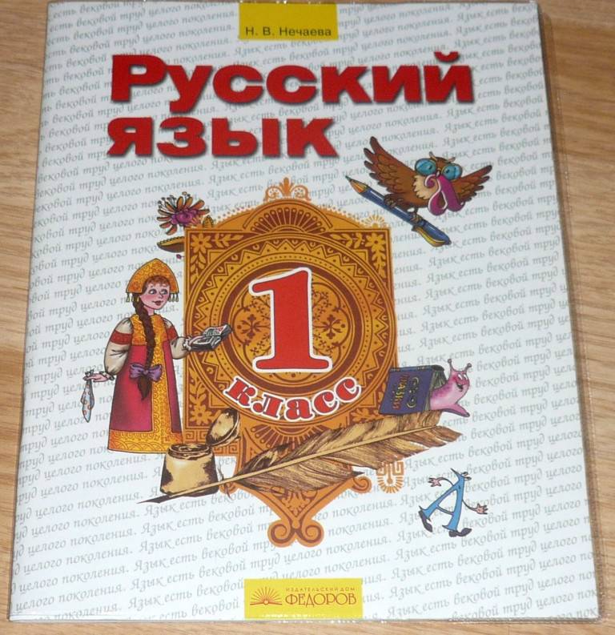
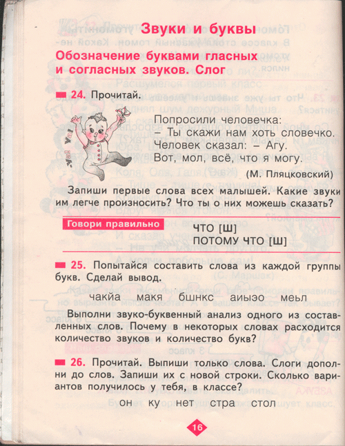
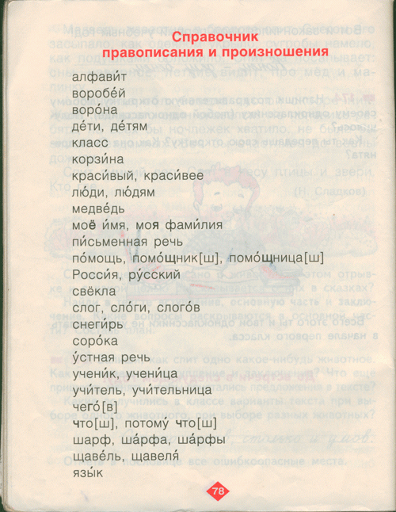
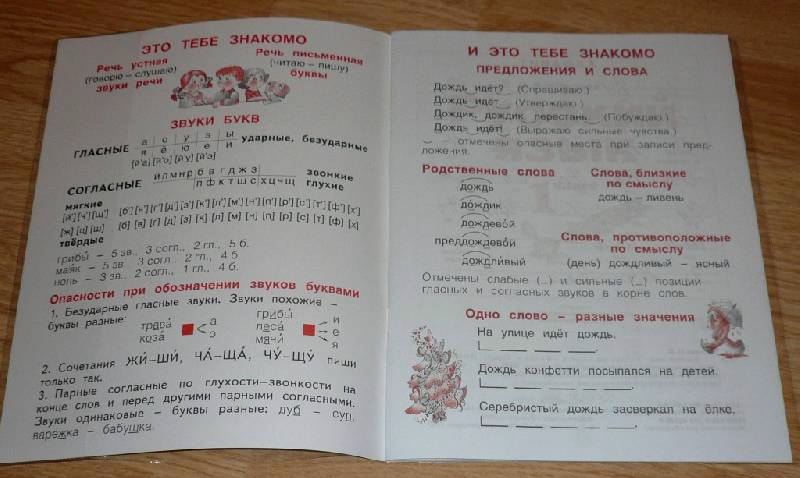
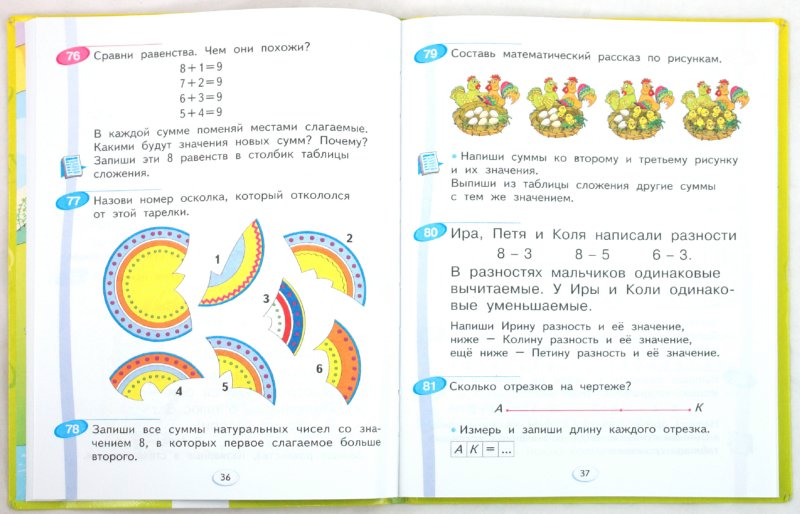
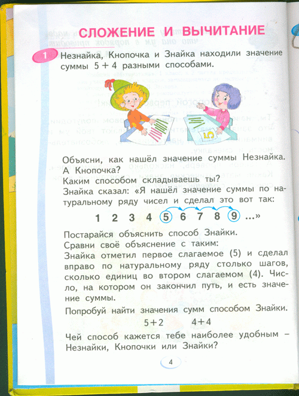
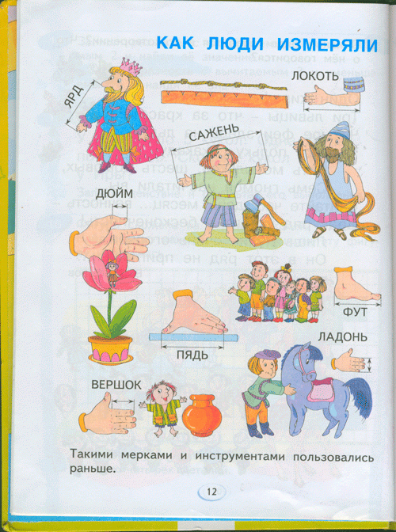
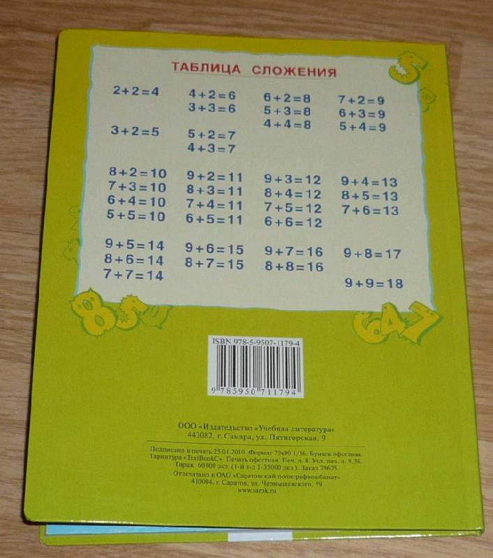
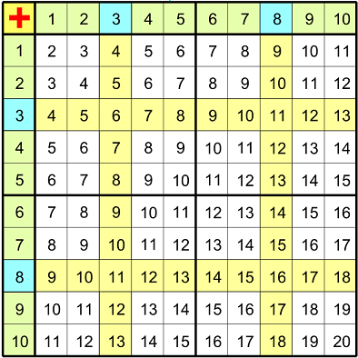

Русский язык 1 класс
А.В. Полякова и Н.А. Песняева
Используется в программах по системе Занкова.
Субъективная оценка: [ ][ ][0][+][ ]
Описание: Спорные моменты есть (упор на транскрипцию), но есть внятные задания, хорошее оформление.
Русский язык 1 класс
Нечаева Наталия
Используется в программах по системе Занкова.
Субъективная оценка: [ ][-][0][ ][ ]
Оформление: низкокачественные (некрасивые) рисунки человека, который не умеет рисовать. Вёрстка безумна.
Обложку делал фотошопер со стажем:

Пример страницы:

Вопросы: почему у малыша странный ирокез на голове? Как нужно произносить надпись в блоке "Говори правильно"?
В учебнике очередные заигрывания с транскрипцией:

Правила русского языка не выделены, и совершенно никак не оформлены:

Найдите на этой странице правила ЖИ-ШИ. Можно подумать, что их нет. В данном учебнике вообще отсутсвуют правила русского языка. Есть только врезки "Запомни" со словом, которое нужно запомнить как пишется. Так же присутсвуют врезки с рассмотрением структуры сложных слов. Но нет главного - нет правил русского языка. Нет даже упоминаний о том, что в русском языке существуют правила.
Математика
Учебник Аргинской
Аргинская Ирэн Ильинична, Бененсон Евгения Павловна
Используется в программах по системе Занкова.
Субъективная оценка: [-][-][0][ ][ ]
Описание: несбалансированные задания, тотальное использование таблицы сложения, фактические ошибки в заданиях. Излишне сложная формулировка простых заданий.
Пример: Математика: Учебник для 1 класса:

Видим: две задачи 76 и 79 на работу с таблицей сложения.
Задача 78. Даже взрослому не сразу понятно, что значит "Запиши все суммы натуральных чисел со значением 8". Речь идет о суммах со значением 8, или о натуральных числах со значением 8 (т.е. просто восьмерках)?
Задачу 78 для школьника первого класса надо формулировать так:
Найди пары натуральных чисел, сумма которых равна 8. Запиши эти пары в виде сумм, но только те, в которых первое слагаемое больше второго.
В свете того, что идет разбирательство принципа "от перестановки мест слагаемых сумма не меняется", задание 78 выглядит странно. Ребенок должен стремиться показать, что при любых размещениях чисел, сумма будет одинакова. Вместо этого ребенка заставляют показать вполне определенные суммы, отобранные по критерию, не имеющему отношения к принципу аддитивности.
Задача 81. Никак не обозначена точка в средней части отрезка АК. Вследствие чего неясно решение, неясно считать ли необзоначенную точку точкой.
Еще страница:

Общее впечатление от текста: авторы пишут муторно, не умеют выражать свои мысли. Этот текст не предназначен для ребенка первого класса.
Лист с картинками:

Вопросы. Почему ничего не написано возле узелков (что это за единица измерения)? Почему у человека с веревкой, который видимо, показывает единицу измерения "локоть", нет руковов, и следовательно неясна связь что локтями обычно мерили длину веревки (рука и рукав с надписью "локоть" другие, а возле человека с веревкой ничего не написано). Зачем человек внизу обнимает коня?
А вот и таблица сложения, найдите, как говорится, закономерность:

Признаться, я думал что таблица выглядит по-другому:

Но здесь она такая. В любом случае, в первом классе ваш ребенок научится считать... до 20! Во всех примерах в учебнике нет выхода за число 20.
Мнение мамы: Дебилоидная система, в частности по математике. Развивает инфантилизм у ребенка, который без помощи родителей часто не в состоянии решить эти тупо составленные задачи. Имею право так заявить, т. к. уже вырастила первого сына по простой советской программе и вполне успешно. А эта занковская гадость дает такой результат, что за 2 года обучения 4 школьника остались на 2-й год.
Вывод: ни в коем случае не обучаться по данному учебнику. Авторы - титулованные идиоты, не осознающие последствий своей деятельности.
Литература
Учебно-методический комплект по литературному чтению для 2 класса начальной школы (часть 1 и 2) Р. Н. Бунеева, Е. В. Бунеевой
Используется в школьных программах серии 2100
Субъективная оценка: [-][-][0][ ][ ]
Описание: Школьная программа 2100 противопоказана к изучению. Критическая статья, кратко: "Данное пособие разрушает традицию обучения школьника литературному чтению и адекватному восприятию реальной действительности". Автор: преподаватель русского языка и литературы с 1972 года, член экспертного совета при Институте образования взрослых, член Петровской академии наук и искусств Дмитриева Евгения Тимофеевна, Санкт-Петербург. Искать в интернете.
Литературное чтение
Учебник для 1 класса ФГОС - Виктория Свиридова
Используется в программах по системе Занкова.
Субъективная оценка: [ ][ ][0][+][+]
Претензий к содержанию и оформлению нет. Хороший интересный учебник, с ясными и понятными заданиями. Иллюстрации достаточно хорошие. Много сказок и задачек на развитие речи и понимание прочитанного.